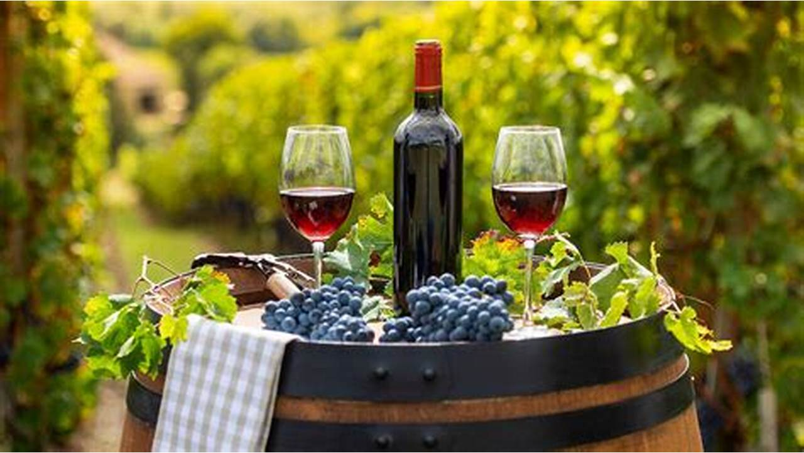

Nuestra HistoriaEn 1975, nuestro fundador Wilfredo Velarde, reconoció las bondades existentes en el departamento de La Libertad y provincia de Gran Chimú, gracias al micro clima especial que el distrito de Cascas ofrece. Junto al apoyo de su hermano mayor, Roberto Velarde, sembró las primeras uvas de la variedad Gross Colman en los terrenos fértiles de la casa de sus padres. De este modo nace el nombre de Los Vinos de Cascas, en honor a la generosa tierra del norte del Perú que en la actualidad es reconocida como la tierra de la Uva y el mejor vino.  |